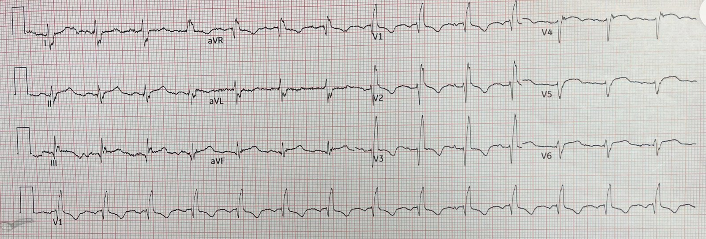
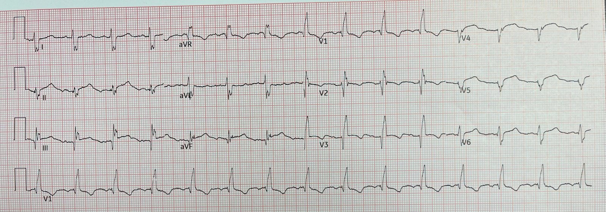
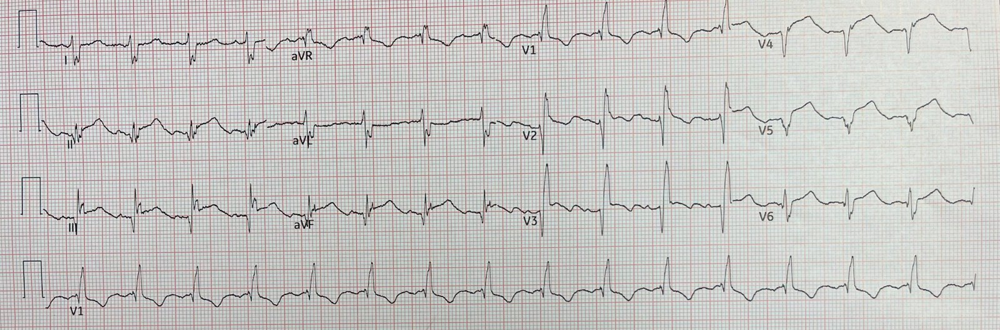
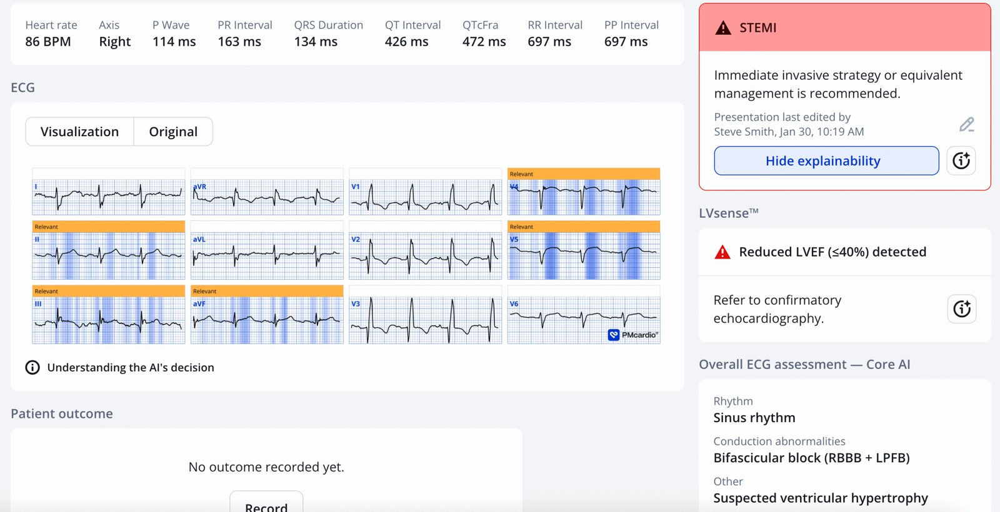
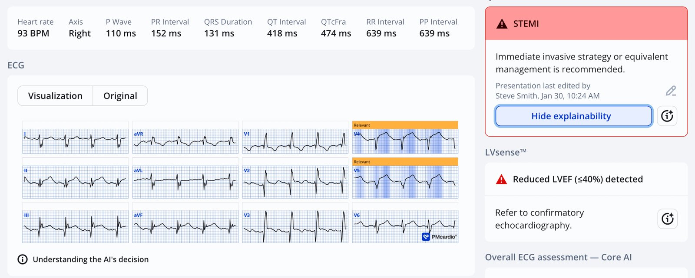
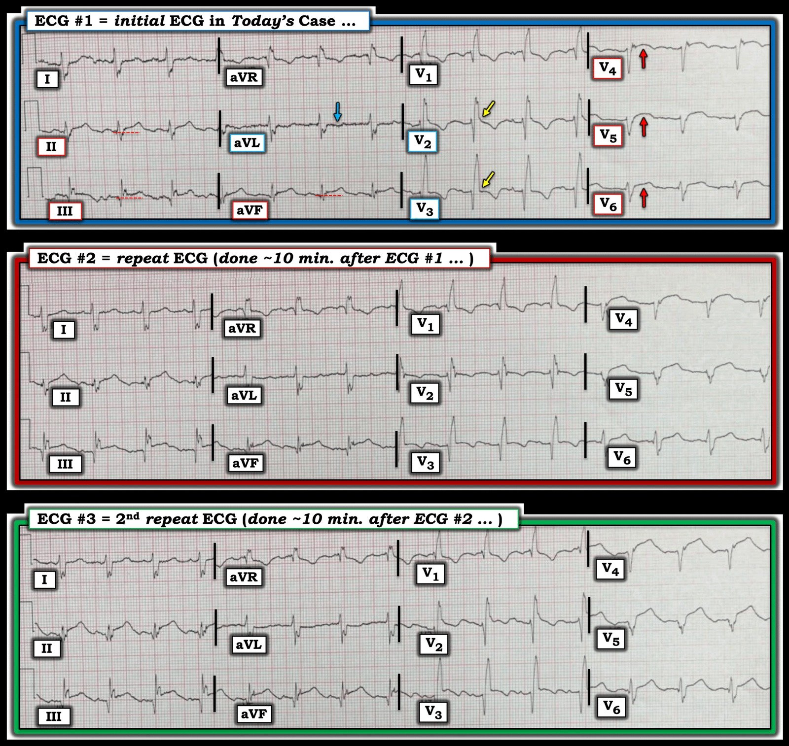

01/02/2026 — Nữ lớn tuổi có tiền sử nhồi máu cơ tim, buồn nôn và chóng mặt, kèm RBBB. Và dữ liệu nào về thuốc tiêu sợi huyết cho bệnh nhân không có ST chênh lên?
Bản dịch tiếng Việt của bài "Elderly F w h/o MI has nausea and vertigo, with RBBB. And what is the data on thrombolytics for patients without ST Elevation?" – Dr. Smith’s ECG Blog. Giữ nguyên toàn bộ 6 hình ảnh của bản gốc.

Một phụ nữ lớn tuổi có tiền sử đái tháo đường và nhồi máu cơ tim cũ đã đặt stent đến khám vì buồn nôn và chóng mặt cấp tại một bệnh viện rất xa xôi, nơi OMI cấp phải được dùng thuốc tiêu sợi huyết trước khi chuyển viện.
Bác sĩ nội trú cũ của tôi, Max Goder-Reiser, đã khám cho bà. Biết rằng nhồi máu cơ tim cấp (OMI) có thể biểu hiện mà không có đau ngực (đặc biệt ở bệnh nhân đái tháo đường), và biết rằng bệnh nhân có bệnh mạch vành với stent đã đặt trước đây, anh lo ngại nhồi máu cơ tim cấp và lập tức ghi điện tâm đồ:
Đây là điện tâm đồ 12 chuyển đạo ban đầu:


Bạn nghĩ gì?
Có RBBB và Left Posterior Fascicular Block (blốc phân nhánh trái sau). Không có ST chênh lên đạt tiêu chuẩn STEMI dựa trên milimét. Nhưng Max rất lo ngại OMI do LAD với LAD "vòng qua mỏm" (wraparound) tới thành dưới, vì có ST chênh lên (STE) ở các chuyển đạo dưới và V4-6. Dĩ nhiên anh cũng lo chẩn đoán quá mức OMI vì bệnh nhân không than đau ngực. Blốc hai phân nhánh trong OMI do LAD là một dấu hiệu rất đáng ngại.
Max đã hỏi bệnh nhân về cảm giác khó chịu ở ngực và bà phủ nhận hoàn toàn.
Tuy vậy, Max vẫn muốn dùng thuốc tiêu sợi huyết. Anh gọi cho bác sĩ tim mạch ở một trung tâm tuyến trên ở xa và bà ấy nói “Đây không phải STEMI”, đồng thời kiên quyết phản đối việc dùng thuốc tiêu sợi huyết.
Vì vậy Max ghi một điện tâm đồ khác ở phút thứ 10:


Giờ đây ST chênh lên nhiều hơn và đạt tiêu chuẩn STEMI. Hiện có một chút ST chênh lên đồng hướng ở V3 (trong RBBB, đoạn ST không bao giờ được đồng hướng với sóng R’), và sóng T ở V4 đã chuyển thành dương.
Anh vẫn chờ thêm 10 phút nữa để ghi bản này:


Giờ đây ST chênh lên ở V4 còn nhiều hơn nữa. Hiện đã có tính đồng hướng ở V2 và V3. Rõ ràng đủ để chẩn đoán OMI do LAD.
Mặc dù điện tâm đồ lúc này đã đạt tiêu chuẩn STEMI dựa trên milimét, đây không phải là một STEMI hiển nhiên về mặt điện tâm đồ đối với một bác sĩ cấp cứu hay bác sĩ tim mạch trung bình.
Bác sĩ tim mạch vẫn không chấp thuận cho Max dùng thuốc tiêu sợi huyết, nhưng anh vẫn dùng.
Mọi triệu chứng đã hết vào lúc chuyển tới trung tâm tiếp nhận.
Đáng tiếc là anh không có thời gian ghi điện tâm đồ sau tiêu sợi huyết và không có thông tin theo dõi tiếp.
Đây là kết quả đọc của PMCardio Queen of Hearts cho điện tâm đồ đầu tiên:


Đây là kết quả đọc của Queen cho điện tâm đồ thứ 2:


Queen cho kết quả 0,95 với bản này (độ tin cậy cao hơn)
Với điện tâm đồ thứ 3, Queen cho giá trị diễn giải là 1,00, độ tin cậy cao nhất có thể.
Diễn giải điểm số: [> 0,5 với mọi bệnh nhân có độ đặc hiệu 98%; 0,5-0,67 là độ tin cậy thấp; 0,67-0,84 là độ tin cậy trung bình, đặc hiệu 98%; 0,84-1,00 là đặc hiệu > 98%; 0,30 – 0,50 là không xác định.]
Ứng dụng PMcardio for Individuals App 3.0 mới nay đã có mô hình Queen of Hearts mới nhất và khả năng giải thích của AI (bản đồ nhiệt màu xanh lam)! Tải ngay cho iOS hoặc Android. https://www.powerfulmedical.com/pmcardio-individuals/ (Dr. Smith và Dr. Meyers đã huấn luyện mô hình AI và là cổ đông của Powerful Medical). Là thành viên cộng đồng của chúng tôi, bạn có thể dùng mã DRSMITH20 để được giảm 20% độc quyền cho năm đầu tiên của gói đăng ký theo năm. Tuyên bố miễn trừ: Một số Mô-đun AI ECG là thiết bị y tế mang dấu CE theo EU MDR và chỉ được chứng nhận lưu hành tại Liên minh châu Âu và Vương quốc Anh. Công nghệ PMcardio chưa được Cục Quản lý Thực phẩm và Dược phẩm Hoa Kỳ (FDA) cấp phép sử dụng lâm sàng tại Hoa Kỳ.
Những điểm cần học:
- Việc cho rằng thuốc tiêu sợi huyết chỉ có lợi ở bệnh nhân có ST chênh lên là một ngộ nhận, và càng là ngộ nhận khi cho rằng số milimét là quan trọng. Gần đây chúng tôi đã phân tích lại toàn bộ dữ liệu từ phân tích gộp FTT, và khác với phân tích đó, chúng tôi loại 9000 bệnh nhân của ISIS-3 không rõ chẩn đoán cuối cùng. Với những bệnh nhân đã biết chắc là có nhồi máu cơ tim, nguy cơ tử vong tương đối là 0,799 ở nhóm được dùng thuốc tiêu sợi huyết so với nhóm không dùng.
de Alencar JN, de Jesus Oliveira MH, Bulhoes E, và cs. Thrombolysis in non-ST-elevation myocardial infarction: systematic review and meta-analysis of randomised controlled trials. 2025;12(2). Truy cập tại: https://openheart.bmj.com/content/12/2/e003700
- 1/3 số bệnh nhân được chẩn đoán nhồi máu cơ tim (cả STEMI lẫn NSTEMI) không có đau ngực. Tài liệu tham khảo và tóm tắt ở bên dưới.
- Còn nhiều người hơn nữa thậm chí không bao giờ đến khám vì cơn nhồi máu cơ tim cấp của họ, do nó hoàn toàn thầm lặng, và chỉ được phát hiện ở lần khám sau nhờ một điện tâm đồ hay một xét nghiệm hình ảnh tình cờ. (“nhồi máu cơ tim thầm lặng”)
- Khi chưa chắc chắn, ghi các điện tâm đồ liên tiếp THƯỜNG XUYÊN là điều then chốt.
- Ngay cả khi ST chênh lên đạt tiêu chuẩn milimét, điện tâm đồ vẫn có thể rất tinh tế.
- Đừng tin bác sĩ tim mạch hội chẩn của bạn khi nói đến chẩn đoán OMI trên điện tâm đồ. Bạn mới là chuyên gia, cùng với Queen of Hearts.
____________
Không có đau ngực trong nhồi máu cơ tim cấp
Canto JG, Shlipak MG, Roger WJ. Prevalence, clinical characteristics, and mortality among patients with myocardial infarction presenting without chest pain. JAMA 2000;283(24):3223–9.
Tóm tắt
Bối cảnh Mặc dù đau ngực được xem rộng rãi là một triệu chứng then chốt trong chẩn đoán nhồi máu cơ tim (MI), không phải mọi bệnh nhân MI đều đến khám với đau ngực. Mức độ xảy ra của hiện tượng này phần lớn chưa được biết.
Mục tiêu Xác định tần suất bệnh nhân MI đến khám mà không có đau ngực, và khảo sát việc xử trí cũng như kết cục sau đó của họ.
Thiết kế Nghiên cứu quan sát tiến cứu.
Bối cảnh nghiên cứu và Bệnh nhân Tổng cộng 434.877 bệnh nhân MI đã xác định, được đưa vào từ tháng Sáu năm 1994 đến tháng Ba năm 1998 trong Sổ bộ Quốc gia về Nhồi máu Cơ tim 2 (National Registry of Myocardial Infarction 2), bao gồm 1674 bệnh viện tại Hoa Kỳ.
Tiêu chí đánh giá chính Tỷ lệ đến khám mà không có đau ngực; đặc điểm lâm sàng, điều trị và tử vong ở bệnh nhân MI không có đau ngực so với có đau ngực.
Kết quả Trong tất cả bệnh nhân được chẩn đoán MI, 142.445 người (33%) không có đau ngực khi đến bệnh viện. Nhóm bệnh nhân MI này trung bình lớn hơn 7 tuổi so với nhóm có đau ngực (74,2 so với 66,9 tuổi), với tỷ lệ nữ cao hơn (49,0% so với 38,0%) và tỷ lệ bệnh nhân đái tháo đường (32,6% so với 25,4%) hoặc có tiền sử suy tim (26,4% so với 12,3%) cao hơn. Ngoài ra, bệnh nhân MI không có đau ngực trì hoãn lâu hơn trước khi đến bệnh viện (trung bình 7,9 so với 5,3 giờ), ít được chẩn đoán MI xác định tại thời điểm nhập viện hơn (22,2% so với 50,3%), và ít được dùng tiêu sợi huyết hoặc nong mạch tiên phát (25,3% so với 74,0%), aspirin (60,4% so với 84,5%), thuốc chẹn β (28,0% so với 48,0%) hoặc heparin (53,4% so với 83,2%) hơn. Bệnh nhân nhồi máu cơ tim không có đau ngực có tỷ lệ tử vong trong viện 23,3% so với 9,3% ở bệnh nhân có đau ngực (tỷ số chênh hiệu chỉnh về tử vong 2,21 [khoảng tin cậy 95%, 2,17-2,26]).
Kết luận Kết quả của chúng tôi gợi ý rằng bệnh nhân không có đau ngực khi đến khám chiếm một phần lớn trong quần thể MI, và có nguy cơ cao hơn bị chậm trễ tìm kiếm chăm sóc y tế, được điều trị kém tích cực hơn và tử vong trong viện.
= = =
======================================
BÌNH LUẬN CỦA TÔI, bởi KEN GRAUER, MD (1/2/2026):
Thách thức mà ca hôm nay đặt ra nằm ở bệnh sử không điển hình và các dấu hiệu điện tâm đồ tinh tế ở một bệnh nhân có RBBB (blốc nhánh phải). Dù vậy — chẩn đoán OMI cấp vẫn phải được đặt ra.
- Để tiện so sánh trong Hình 1 — tôi đã đặt 3 điện tâm đồ cạnh nhau.
= = =
Mặc dù Không có Đau Ngực . . .
Không phải mọi bệnh nhân OMI cấp đều có CP (đau ngực) cấp. Bệnh nhân hôm nay không có. Thay vào đó — bệnh nhân hôm nay là một phụ nữ lớn tuổi có tiền sử đái tháo đường đã biết và nhồi máu cơ tim cũ đã đặt stent. Vì vậy, mặc dù không có CP — bệnh nhân hôm nay thuộc nhóm nguy cơ cao hơn. Do đó, việc soi xét kỹ điện tâm đồ ban đầu của bà là điều thiết yếu.
- Nhịp trên điện tâm đồ #1 là nhịp xoang, tần số ~80/phút.
- QRS rộng do RBBB hoàn toàn (rSR’ ở chuyển đạo I — với sóng S tận rộng ở các chuyển đạo I, aVL và V6).
- Ngoài ra — có khía (phân mảnh) ở mỗi chuyển đạo chi. (Phân mảnh thường gợi ý “sẹo” — trong ca này có lẽ là do nhồi máu cũ của bệnh nhân).
= = =
Như Dr. Goder-Reiser và Dr. Smith đã nêu — có ST chênh lên ở các chuyển đạo dưới, và ở các chuyển đạo từ V4 đến V6.
- Mức độ ST chênh lên ở các chuyển đạo dưới không nhiều. Tuy vậy — các đường chấm ĐỎ cho thấy ST chênh lên ở các chuyển đạo này là thật. “Mắt” tôi bị thu hút bởi hình ảnh đoạn ST thẳng đuỗn (đặc biệt ở chuyển đạo II và aVF trong Hình 1) — cùng với ST chênh xuống soi gương tinh tế-nhưng-chắc chắn ở chuyển đạo aVL, xác nhận rằng một biến cố cấp đã xảy ra (mũi tên XANH LAM).
- Mức độ ST chênh lên ở các chuyển đạo từ V4 đến V6 cũng không lớn. Tuy nhiên — việc không có tăng tiến sóng R ở các chuyển đạo ngực bên này, cùng ST dạng vòm (coving) ở V4, V5 và ST thẳng đuỗn ở V6 cho chúng ta biết rằng các dấu hiệu này là “thật” và cho thấy nhồi máu đã xảy ra vào một thời điểm nào đó (đó là lý do vì sao tìm được một điện tâm đồ cũ của bệnh nhân này sẽ rất hữu ích).
- ĐIỂM THEN CHỐT (PEARL): “Mắt” tôi đặc biệt bị thu hút bởi ST chênh lên nhẹ-nhưng-thật ở chuyển đạo V2 — cũng như bởi điểm J nằm ở đường nền (thay vì chênh xuống) ở chuyển đạo V3. Các chuyển đạo trước khi có RBBB lẽ ra phải biểu hiện ST-T hướng ngược với R’ tận (tức là dưới dạng ST chênh xuống nhẹ). Việc không có điểm J chênh xuống này (các mũi tên VÀNG) gợi ý rằng ST chênh lên thấy ở V4, V5, V6 thực ra bắt đầu từ chuyển đạo V2 (và nên được coi là cấp cho đến khi chứng minh được điều ngược lại).
= = =
ĐIỀU CỐT LÕI: Đáng tiếc là chúng tôi không có điện tâm đồ cũ để so sánh ở bệnh nhân hôm nay. Các dấu hiệu mô tả ở trên cho thấy rõ đã có nhồi máu diện rộng xảy ra vào một thời điểm nào đó. Vấn đề, với bệnh sử không điển hình (tức là không có CP) — là phân biệt giữa: i) Phình thất trái do nhồi máu diện rộng cũ, với ST chênh lên tồn dư; — với — ii) Nhồi máu cũ nay biểu hiện thêm nhồi máu mới. Ban đầu tôi không chắc điện tâm đồ #1 phản ánh một nhồi máu cấp hay rất gần đây, nay có ST chênh lên tồn dư ở nhiều chuyển đạo do phình thất trái — hay — liệu một số (hoặc phần lớn) các dấu hiệu mô tả ở trên là thật và “mới”.
- Mặc dù ban đầu tôi phân vân giữa “cũ” và “mới chồng lên cũ” đối với hình dạng QRST ở các chuyển đạo từ V4 đến V6 — tôi rất nghi ngờ OMI cấp cho đến khi chứng minh được điều ngược lại vì: i) Việc không có CP không chứng minh được điều gì (có tới 1/3 số STEMI không có CP tại thời điểm ghi điện tâm đồ đầu tiên — Canto và cs. trên JAMA 283(24):3223-3229, 2000 — Xem thêm Bình luận của tôi về “nhồi máu cơ tim thầm lặng” trong bài ngày 5 tháng Chín năm 2024); — ii) ST chênh lên ở các chuyển đạo dưới kèm ST chênh xuống soi gương tinh tế-nhưng-thật ở aVL (mũi tên XANH LAM) trông có vẻ cấp; — và, iii) Điểm J chênh lên tinh tế-nhưng-thật xuất hiện giữa V1 và V2 cũng trông có vẻ cấp (các mũi tên VÀNG).
- GHI NHẬN công của Dr. Goder-Reiser, người đã tinh ý nhận ra các đặc điểm điện tâm đồ này — và biết rằng cách để khẳng định chắc chắn một OMI cấp đang diễn tiến chỉ đơn giản là ghi lại điện tâm đồ trong vòng 10 phút.
= = =
T.B. (P.S.): Đáng dành một chút thời gian xem Hình 1 để ôn lại các thay đổi điện tâm đồ liên tiếp đã xảy ra chỉ trong vòng 20 phút.
- Điểm J ở các chuyển đạo dưới chênh lên tăng dần qua điện tâm đồ #2 và #3 là rất ấn tượng. Hãy chú ý hình ảnh ST thẳng đuỗn ở các chuyển đạo dưới đã trở nên rõ ràng đến mức nào ở điện tâm đồ #3. Giờ hãy quay lại điện tâm đồ #1 và nhận ra rằng hình ảnh ST thẳng đuỗn này đã có thể nhận biết được ở giai đoạn sớm trên điện tâm đồ ban đầu.
- Tương tự — hãy chú ý ST dạng vòm ở V2 và V3 trở nên rõ hơn trên điện tâm đồ #2 và #3. Giờ hãy quay lại và tập trung vào các mũi tên VÀNG ở điện tâm đồ #1 để nhận ra rằng manh mối tinh tế này đã có thể nhận biết được ở giai đoạn sớm trên điện tâm đồ ban đầu.
= = =
Hình 1: 3 điện tâm đồ trong ca hôm nay.


= = =
= = =